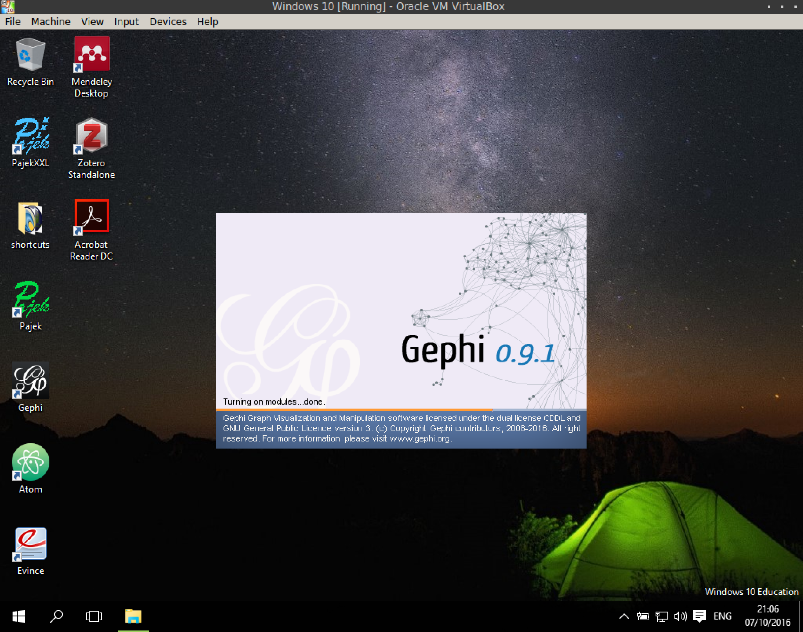
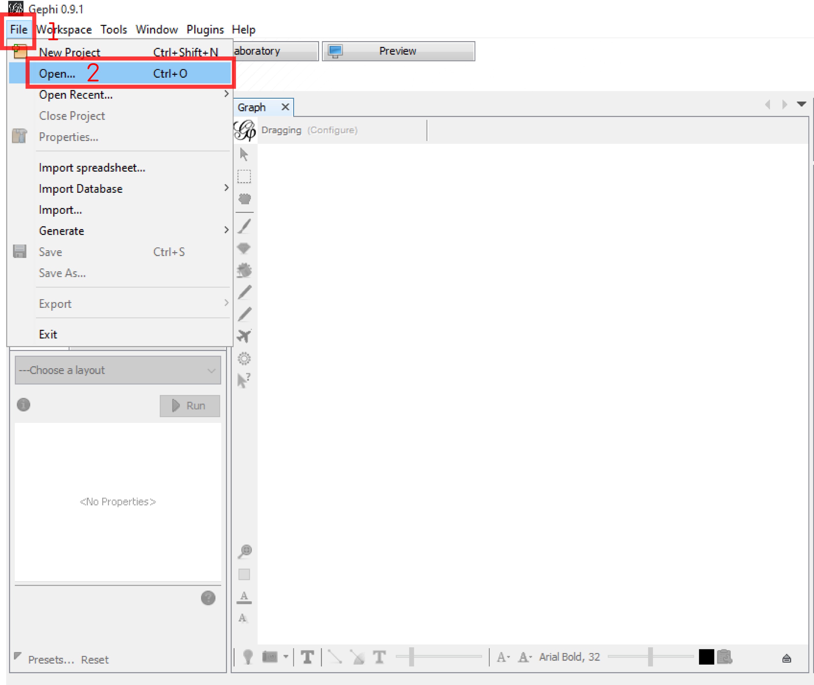
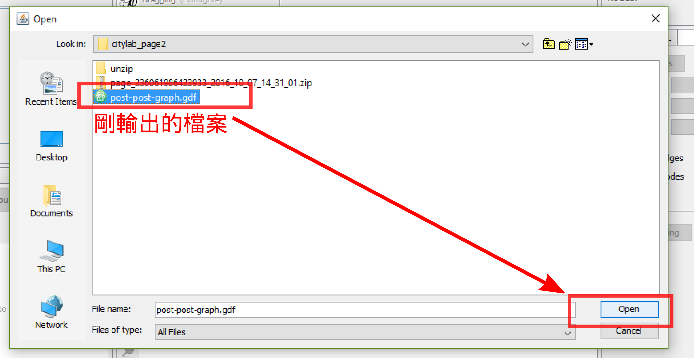
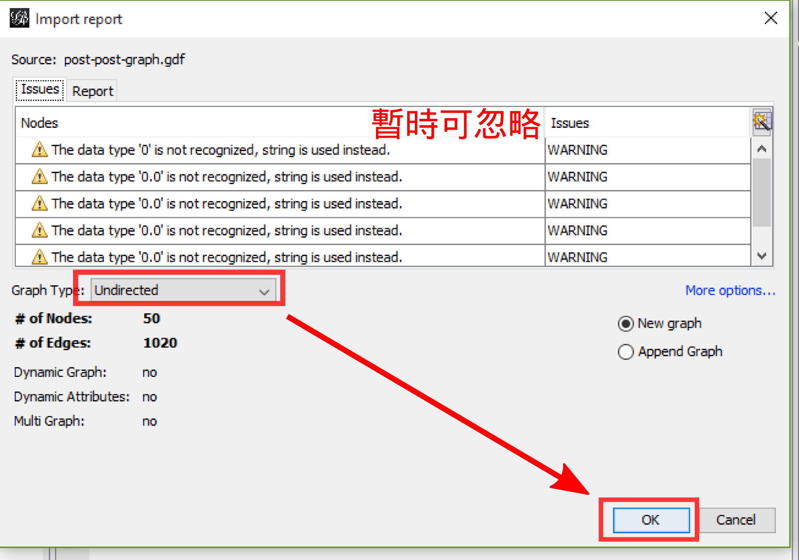
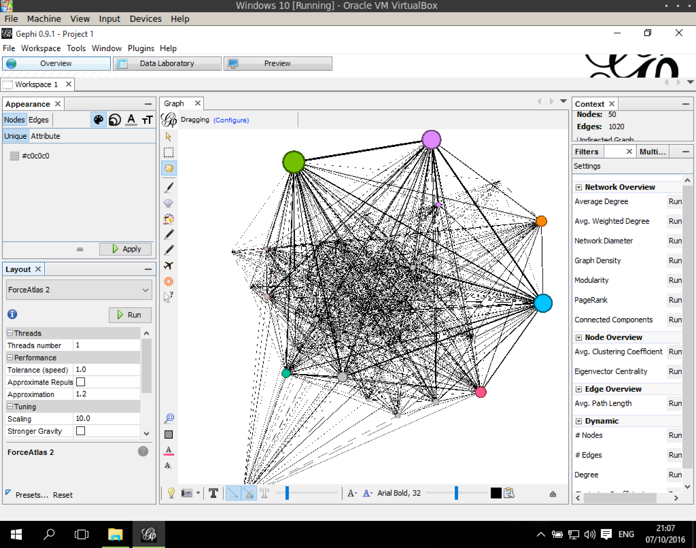
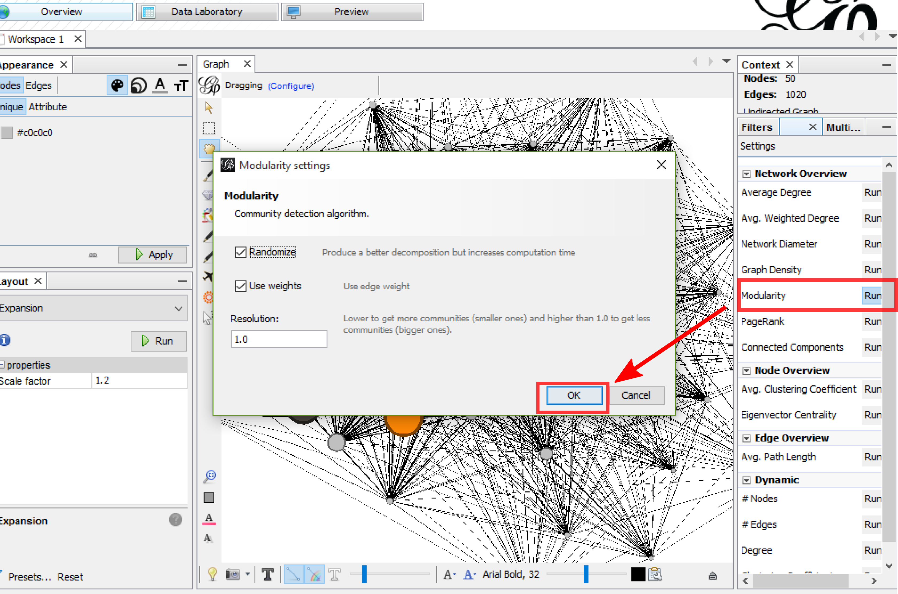
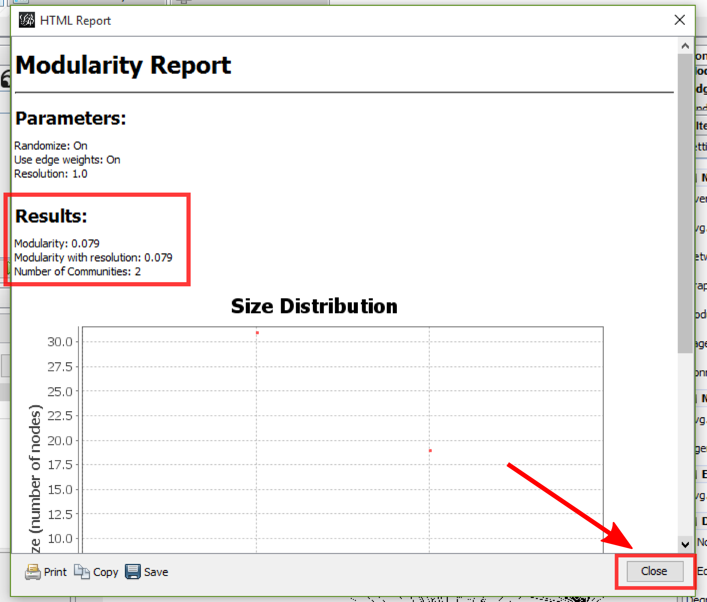
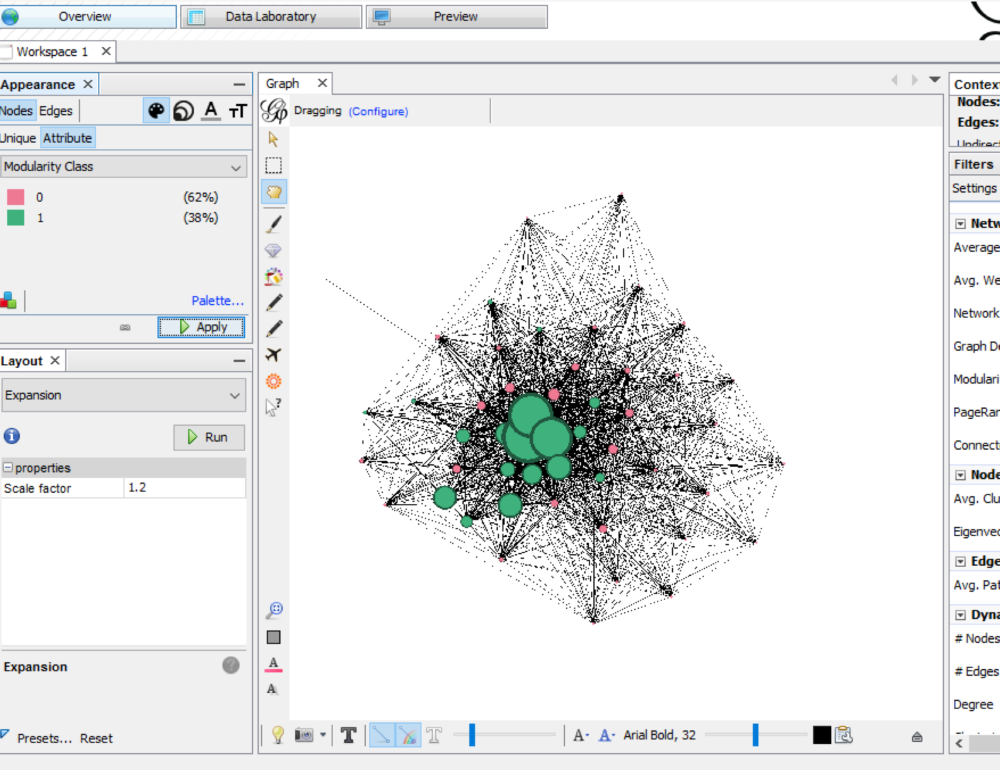

1-mode 網絡操作
匯入
轉換成 1-mode 並輸出之後，關閉 Gephi，再重新打開。 
匯入 1-mode 的網絡，過程與前述類似 
選到剛輸出的檔案，點打開 
匯入報表，上面有出現一些警告，不過暫時不影響處理，可先忽略。 確定是 Undirected 網絡後，點 OK 打開 
打開後會長這樣。不是方框的節點分佈，大小顏色也是與原來關 Gephi 前類似，是因爲在 gdf 中有記錄原來的 X、Y座標值。 
基本分析
再跑一次 modularity 
這次只找到 2 組，最佳的模組化值也只有 0.079 
初步完成
經過一番 Layout處理、調整顏色、大小之後，網絡長這樣 